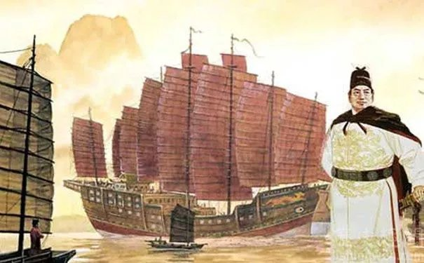
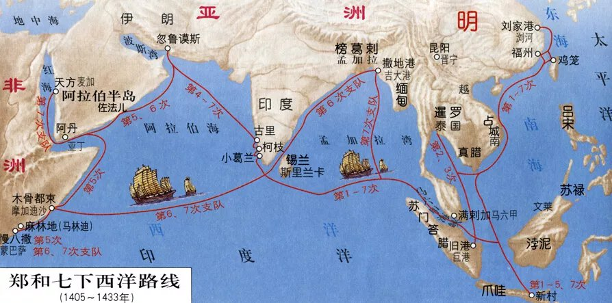

- 你当前所在的页面：首页>返回
郑和七下西洋
郑和原本姓马，是云南昆阳人。他的祖上世代信奉回教，可能是在元朝征服云南后，从西域来到的云南。他的父亲名叫马哈只，这个名字说明他是朝觐过伊斯兰教圣地麦加的人。
洪武十三年，明朝大将傅友德，蓝玉和沐英等平定云南，打败了元朝在这里的势力。郑和作为一个被俘虏的幼童，被带回南京做了太监。14岁时分配给了燕王朱棣，做了个侍童，赐名郑和。
- 
郑和随同燕王朱棣，参加过南下夺取皇位的靖难之役。永乐二年因功升任为内官监太监，官至四品。他第一次奉命下西洋的时候正是30岁左右，年富力强。
相传郑和这人“身高七尺，腰大十围，耳白过面，齿如编贝，行如虎步，声音弘亮”。
他能言善辩，非常机警，同时又为人谦和。又记载说他“有智略，知兵习战”，他跟着朱棣打过仗，对于用兵看起来也并不外行。
在南京城的西北，长江边有一座宝船公园。里面有几座巨大的古代船坞，展厅中还有当地挖掘出土的文物--用整根大树制作成的长达十几米的巨大船舵，这就是明代留下的宝船厂遗址。
当年明成祖朱棣动员全国造船力量，调浙江、福建、湖广等五省优秀造船工匠四百余户来南京龙江船厂制造远洋巨船。
从1405年，也就是明成祖朱棣的永乐三年开始，此后29年间明朝曾经派遣大规模的舰队七下西洋。当时的场面浩大，盛况空前。明代人的记载是“维艄挂席，际天而行”，就是掌着舵，扯着帆，向着天边开去。领导这七次海上远征盛事的就是中国古代航海家，被称为三宝太监的郑和。
从元代时起，就有了西洋的名称，当时大概是以如今东南亚的加里曼丹岛（元代称浡泥）为界，以东称东洋，以西为西洋。郑和船队所活动的地区都在爪哇岛以西，所以是“下西洋”。
- 
在七次航行中，三宝太监郑和率领船队从南京出发，在江苏太仓的刘家港集结，至福建福州长乐太平港驻泊伺风开洋 ，远航西太平洋和印度洋拜访了30多个国家和地区，其中包括爪哇、苏门答腊、苏禄、彭亨、真腊、古里、暹罗、榜葛剌、阿丹、天方、左法尔、忽鲁谟斯、木骨都束等地，目前已知最远到达东非、红海。
郑和下西洋是中国古代规模最大、船只和海员最多、时间最久的海上航行，也是15世纪末欧洲的地理大发现的航行以前世界历史上规模最大的一系列海上探险 。